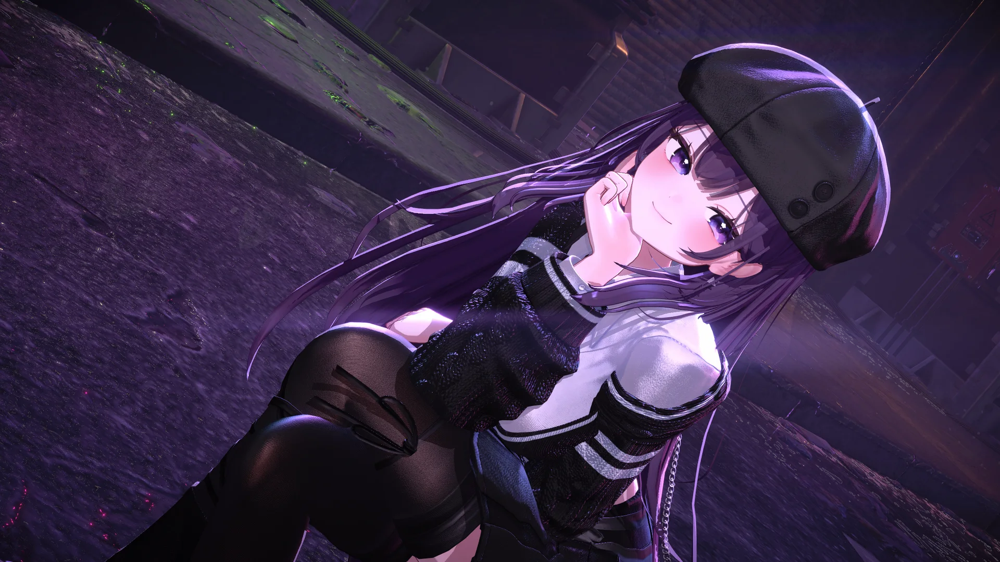

난초
NANCHO
THE MIDNIGHT LOG
메인
프로필
공지
일정
업보
일기
노래책
옷장
미니게임
DAY
문의
MENU +
NANCHO
난초 NANCHO — THE MIDNIGHT LOG
NEXT TRANSMISSION
—
게임과 이야기 사이, 밤의 주파수를 맞춰요.
SOOP ↗
YOUTUBE ↗
X ↗
© 2026 NANCHO
CLOSE ×
프로필
PROFILE
공지
NOTICE
일정
SCHEDULE
업보
KARMA
일기
DIARY
노래책
SONG BOOK
옷장
WARDROBE
미니게임
MINI GAME
DAY
문의
TRANSMIT
난초에게 전파 보내기
×
닉네임 (선택)
내용
보낸 내용은 난초만 볼 수 있어요. 답이 필요하면 연락 수단도 함께 적어주세요.
전파 전송